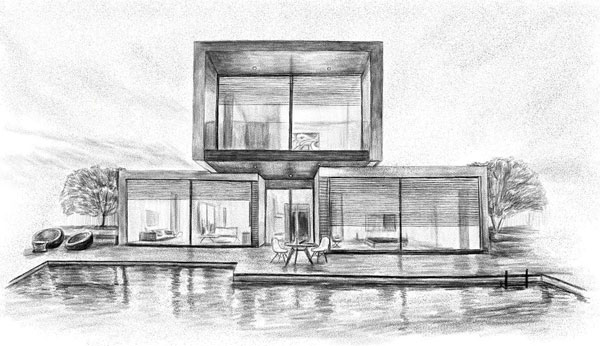
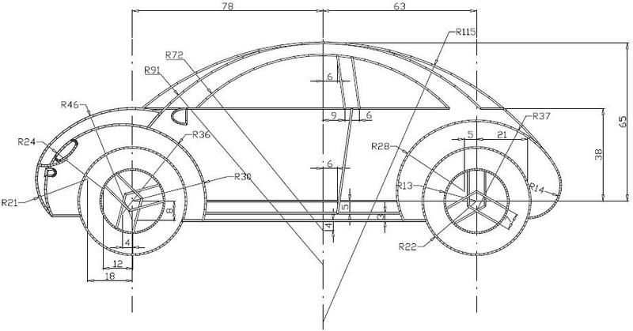
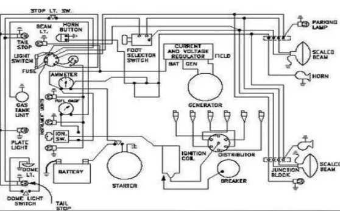
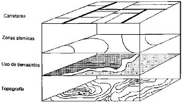
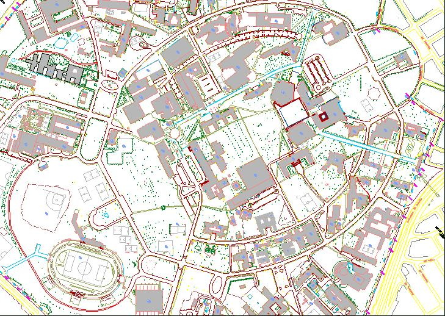
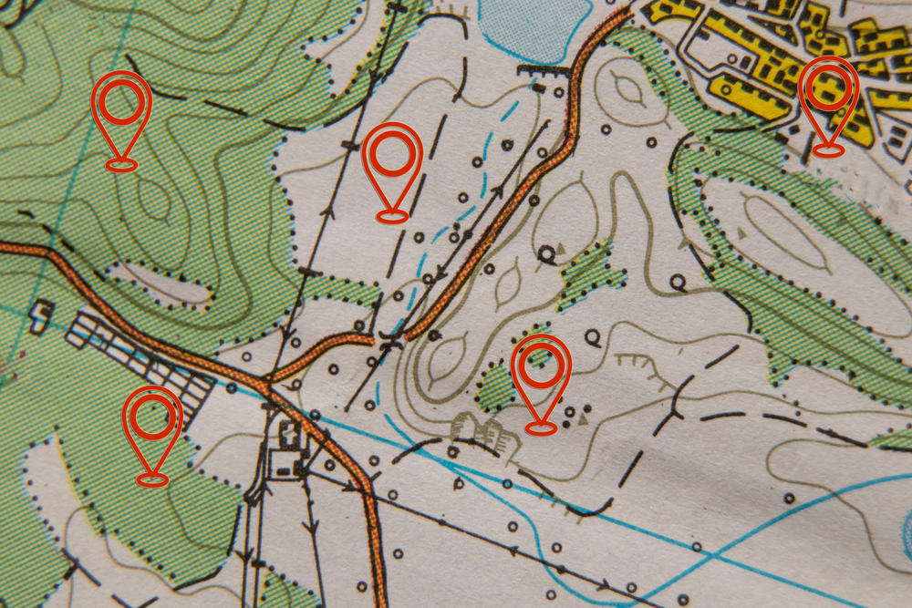
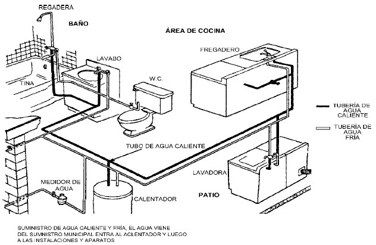
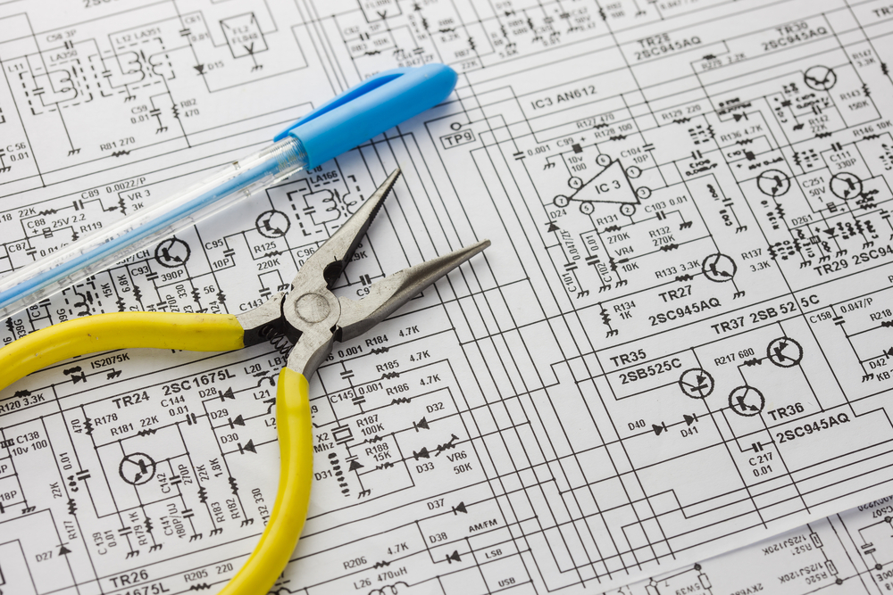

DIBUJO TÉCNICO
QUÉ ES DIBUJO TÉCNICO?
El dibujo técnico es un sistema de representación gráfica de diversos tipos de objetos, con el propósito de proporcionar información suficiente para facilitar su análisis, ayudar a elaborar su diseño y posibilitar su futura construcción y mantenimiento. Suele realizarse con el auxilio de medios informatizados o, directamente, sobre el papel u otros soportes planos.
La representación gráfica se basa en la geometría descriptiva y utiliza las proyecciones ortogonales para dibujar las distintas vistas de un objeto
Los objetos, piezas, máquinas, edificios, planos urbanos, entre otros , se suelen representar en planta (vista superior, vista de techo, planta de piso, cubierta, entre otros ), alzado (vista frontal o anterior) y lateral (acotaciones); son necesarias un mínimo de dos proyecciones (vistas del objeto) para aportar información útil del objeto, dependiendo esto de la complejidad del mismo. Las vistas mencionadas de acuerdo al sistema ortogonal se llaman fundamentales por pertenecer al triedro fundamental, este triedro lo conforman el plano anterior, superior y lateral.
CARACTERÍSTICAS:
Formas de expresión:
El dibujo técnico engloba trabajos como bosquejo y/o croquis, esquemas, diagramas, planos eléctricos y electrónicos, representaciones de todo tipo de elementos mecánicos, planos de arquitectura, urbanismo, etc, resueltos mediante el auxilio de conceptos geométricos, donde son aplicadas las matemáticas, la geometría euclidiana, diversos tipos de perspectivas, escalas, entre otros.
Medios y soportes:
El dibujo puede ser plasmado en una gran variedad de materiales, como son diversos tipos de papel, lienzo o acetato (mylar); también puede proyectarse en pantalla, mostrarse en monitor, recrear animaciones gráficas de sus volúmenes, entre otros.
Útiles e instrumentos:
Para realizar el dibujo técnico se emplean diversos útiles o instrumentos: reglas de varios tipos, compases, lápices, escuadras, cartabón, tiralíneas, rotuladores, etc. Actualmente, se utiliza con preferencia la informática, en su vertiente de diseño asistido mediante programas (CAD, 3D, vectorial, etcétera) con resultados óptimos y en continuo proceso de mejora.
LINEAS EN EL DIBUJO TÉCNICO:
Línea oculta:
Se usa para mostrar superficies, bordes o esquinas de objetos que están ocultas a la vista, y generalmente se representan por líneas segmentadas.
Línea central o de centro:
Llamada también línea de eje, su función es mostrar centros de cavidades y características simétricas.
Líneas de simetría:
Al igual que la línea de centro se usa para delimitar la mitad de una pieza simétrica pero con la diferencia que en esta solo se colocará cuando se dibujan vistas parciales de dichas piezas y se identifica por tener dos líneas paralelas.
Línea de dimensión:
Forma parte de las líneas de acotación de un objeto.
Líneas guía:
Indican la parte de un objeto a la que hace referencia una nota.
Línea de ruptura:
Se utiliza cuando se desea acortar la representación de una pieza larga.
Línea de corte plano:
Se utiliza para indicar donde se realizó un corte imaginario.
Línea de sección:
Se utiliza para indicar la superficie en la vista de una sección.
Línea virtual:
También llamadas líneas fantasma, son líneas imaginarias ocupadas para indicar posiciones diferentes de un mismo objeto con movimiento.
TIPOS DE DIBUJO TÉCNICO:
Con el desarrollo industrial y los avances tecnológicos el dibujo ha aumentado su campo de acción, los principales son:
| Dibujo arquitectónico |
El dibujo arquitectónico abarca una gama de representaciones gráficas con las cuales se realizan los planos para la construcción de edificios, casas, quintas, autopistas, iglesias, fábricas y puentes entre otros. Se dibuja el proyecto con instrumentos precisos, con sus respectivos detalles, ajuste y correcciones, donde aparecen los planos de planta, fachadas, secciones, perspectivas, fundaciones, columnas, detalles y otros. |
 |
| Dibujo mecánico |
El dibujo mecánico se emplea en la elaboración de planos para la representación de piezas o partes de máquinas, maquinarias , vehículos como grúas, motos, aviones, helicópteros e industriales. El campo comercial, donde la aplicación práctica de los dibujos de ingeniería adopta la forma de dibujos de trabajo, es importante tener en cuenta un amplio conocimiento de los que son los elementos de máquinas, su fabricación y la representación gráfica de cada uno de ellos.
|  |
| Dibujo eléctrico |
Este tipo de dibujo se refiere a la representación gráfica de instalaciones eléctricas en una industria, oficina o vivienda que requiera de electricidad.
|
 |
| Dibujo geológico |
El dibujo geológico se emplea en geografía y en geología, en él se representan las diversas capas de la tierra empleando una simbología y da a conocer los minerales contenidos en cada capa. Se usa mucho en minería y en exploraciones de yacimientos petrolíferos.
|
 |
| Dibujo topográfico |
Es el dibujo técnico que tiene por objeto representar en un plano las características de un terreno, tales como: el relieve, la altura a diferentes niveles, entre otros. El dibujo topográfico nos representa gráficamente las características de una determinada extensión de terreno, mediante signos convencionalmente establecidos. Nos muestra los accidentes naturales y artificiales, cotas o medidas, curvas horizontales o curvas de niveles.
|
 |
| Dibujo urbanístico |
Este tipo de dibujo se emplea en la organización de ciudades: en la ubicación de centros urbanos, zonas industriales, bulevares, calles, avenidas, jardines, autopistas, zonas recreativas entre otros. Se dibujan anteproyectos, proyectos, planos de conjunto, planos de pormenor entre otros. |
 |
| Dibujo técnico de las instalaciones sanitarias |
Tiene por finalidad representar el posicionamiento de cada una de las piezas sanitarias: ducha, lavamanos, retrete, etc. Incluyendo la ubicación de las tuberías internas o externas.
En los planos de instalaciones sanitarias se utilizan diferentes colores normalizados para indicar si se trata de cañerías (tuberías), artefactos o elementos de cloaca, pluvial, ventilación, agua caliente o fría.
También en los cortes se puede observar las pendientes de las cañerías, profundidades, alturas o distancias a planos de referencias. |
 |
| Dibujo técnico electrónico |
Se relaciona con la representación de esquemas y diagramas de circuitos electrónicos de circulación de corriente de poca intensidad tales como radios, televisores, computadoras, entre otros.
|
 |
GO EXPLORE